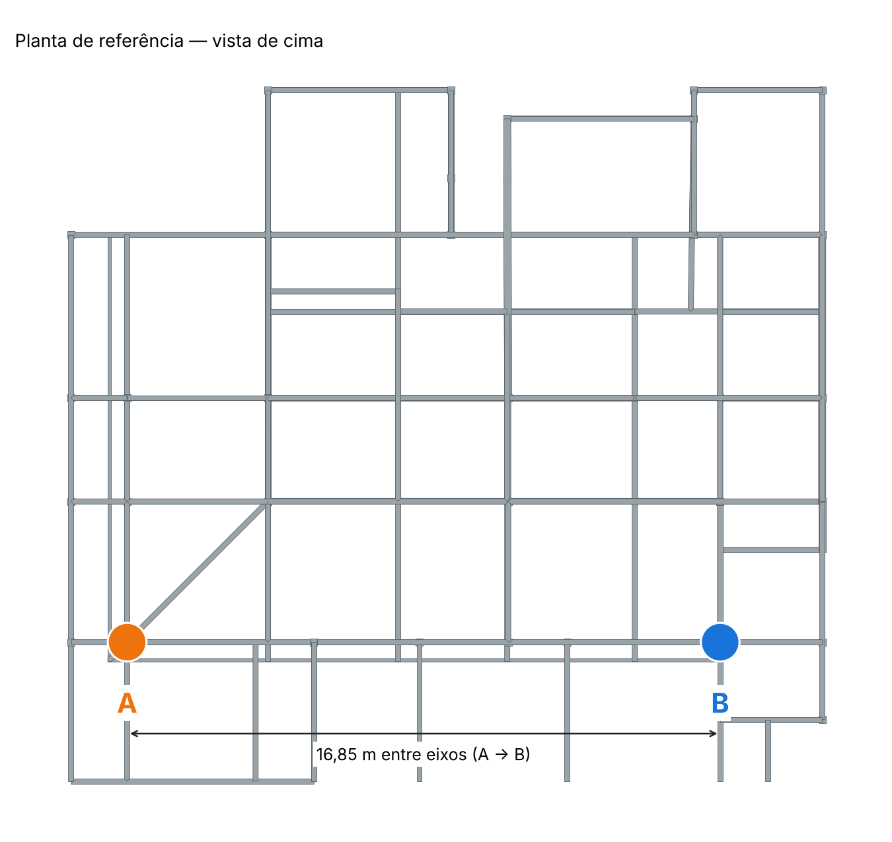

A realidade aumentada do celular serve para conferência visual (posição de pilares, vigas e treliças, interferências). Ela pode desviar alguns centímetros a cada poucos metros, então não use para locação, gabarito ou prumo. Para isso, vale a trena, o nível e as pranchas.